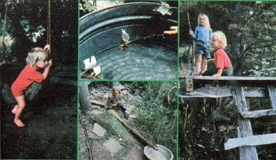

Your little ones can entertain themselves with these . . .
Most toys produced nowadays seem outrageously expensive, easily broken, and unnecessarily complicated . . . but my youngsters have inspired me (and taught me how) to create playthings out of free, readily available materials.
A HORSE SWING
For example, while taking a stroll through our woods one day, I spied a young locust tree with a beautiful curve at its base. Immediately, I realized that the bottom of the trunk would make a sturdy and graceful swing for my daughter. So, since I also needed some posts of about the tree's diameter, I cut it down. (At the time, I thought the bent section was unique, but-as is often the case after one first notices a "new" thing-I've since seen many others like it.)
Back at the house, I stripped off the trunk's bark . . . which is quite an easy thing to do while the wood is green. Then, using a brace with a one-inch bit, I drilled two parallel holes from the swing-to-be's side, one at each end of my child's future "flying" steed.
Next, I sawed a pair of 1"-diameter lengthseach about 8" longer than the width of the locust log-from a straight hardwood branch. Once I'd whittled off the bark and blunted the ends (children and sharp objects should never mix!), the stubs fit through the holes. Ropes were then attached to the available ends of the crosspieces to suspend the swing.
Our "hanging horse" can be used safely by any child old enough to hold him- or herself in place on it, and of course the height can be adjusted to suit the length of the little one's legs.
BARK PIPELINES
The remainder of the locust tree was o stripped and cut into fenceposts, and the process produced a pile of curled bark. Our four-year-old masterminded a water engineering project-using the leftovers-that became more elaborate as time went on. I thought his homemade aquaduct was a fine toy, but just a toy . . . until I visited our neighbors farther down the mountain and saw their spring water flowing through a bark-strip conduit!
BARK BOATS
Another bark project will turn the small scraps (those that are about 2" or 2-1/2" wide and 3" to 4" long) into little "Viking ships".
First, use a nail to press holes into the bark at any points where you want to locate masts (the uprights are made from thin sticks whittled to a point). Trapezoid-shaped pieces of paper (or big leaves) can serve as sails. Just slip them onto the sticks and mount the masts in the nail holes.
When you blow on the little "barks", they sail prettily on the water, and there're almost always a few exciting sinkings to watch.
A PLAYING PLATFORM
The next time you have to cut down trees near your house, leave a little more stump than you ordinarily would . . . for a sturdy foundation on which to build a playing platform!
To make the structure shown in the accompanying photo, it was necessary to set a post in the ground at a point about six feet from two serviceable stumps. Then we spiked a 2 X 4 from each stump to the post, to form a triangular base . . . nailed some old boards across these two beams . . . and added a small ladder.
Since this "playform" is shaded by greenery, it has the feel of a tree house . . . or it can be a pretend pirate ship, a goblin's cave, or a knight's castle. And you can bet it sees a lot of use on hot summer days!
|
 |
|
|